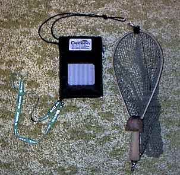
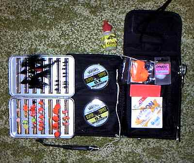
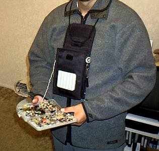

私のお気に入り
自作の道具たち ミニ・チェストパック
オービスのカタログを見ていたら、必要最小限の装備を入れて胸先にぶら下げるミニ・チェストパックが載っていた。見たもの何でも欲しくなるたちなのだが、定価49USドルはいかにも高く、手が出ない。（笑） それに、ニュージーランドには売ってないだろうし、売っていたとしてもかなり割高になるだろうからますます購入は無理である。
そこで。
今のフラットに引っ越しした時、数週間ほど近所のガレージセールを回って家具などを揃えた頃があったのだが、その時に小さな黒いポーチを買ってあったのを思い出した。値段は8NZドル（約480円）ほどだったか。このポーチはニュージーランド航空のビジネスクラスに乗るともらえるものらしく、オールブラックスのような黒一色、ファーン（シダの葉）マーク入りのなかなか渋い製品である。
このポーチには深いマチが付いている上に、全周にめぐるファスナーで開くとメッシュポケットが大・中・小とあり、工夫次第でチェストパックらしきものができそうな気がした。そこで、さっそくあり合わせの材料で製作にとりかかった。
材 料
- 波形ウレタンフォーム（外側のフライパッチ用）
- 安全ピン
- 幅広のマジックテープ（ループ側）
- クリップ付きナイロンストラップ（緑色）
（昔、カメラ屋さんでもらったフジフィルムの販促品に付いていた）
作り方
- 本体表側に、フライホルダーとして、波形ウレタンフォームをボンドで接着
- 本体内部に、PERRINEのアルミフライボックスを10lbのナイロンラインと安全ピンで結ぶ。
これは、フライボックスを落とさないための工夫。また、フライボックスの交換も容易。 - 本体の左側にラインクリッパーとリトリーバーを、安全ピンで固定
- 本体の右側に Gink のボトルを、安全ピンと凧糸とで固定
- 背中に回したナイロンストラップ（緑色）を装着するために、本体の下部両側に安全ピンを付ける
- ケッチャムリリースの末端に凧糸を結び、他方の端を安全ピンに結んでパック本体へ連結
これも、置き忘れ防止のため。昔、気に入っていたフォーセップを川原に置き忘れたことがあって悲しい思いをしたので。 - 本体フラップの裏側に、ティペット回収用マジックテープ（ループサイド）をボンドで接着
- 本体フラップの表側に、デクーンの奥村さんにいただいたワッペンをミシンで縫いつけ
- 首に掛けるひもの上端（背中側）にループを作り、ランディングネットとリトリーバーを装着し、重さのあるパックとネットとを前後に振り分けて身に付けるようにした。

収納容量
- ラインクリッパーとリトリーバー、Gink のボトル
- PERRINEのアルミフライケース
- ケッチャムリリース（ペン型のフライフック外し）
- ティペットケース３～５個
- リーダーパッケージ５～10個
- インジケーターなどの小物ケース１個
- コンパクトカメラ
さすがに、カメラを入れると重たくて首がこりそう。本末転倒の極み。（笑）

簡単だった割にはなかなか見栄えのよいチェストパックができた。試着してみると、重量バランスも良く、タウポで一日中重いニンフを振りまくっても肩がいたくならなさそうに軽く感じる。また、本体のマチが深いので、デジカメが入るほど収容キャパシティがあるのがうれしい。フライボックスをルアーケースに交換すれば、ルアーでの釣行にも使える。

こんな工作をするのも、肩がこりやすくなった証拠。
あ～ぁ、トシはとりたくないなぁ。
試用記
５月25日に初めてこのチェストパックを使った。評価は、まずまず合格、といったところか。軽快感は申し分なく、肩に掛かる重量はほとんど感じられないレベル。首の後ろ側にランディングネットを垂らしているので、このカウンターバランスが効いているようだ。ランディングネットの脱着にも問題はない。
本体を胸に固定するためのナイロンストラップは、ほど良い長さだったので、前屈みになってもパックがぶらぶらすることはない。
もう少し容量があると良いような気もするが、また荷物が増えると肩こりの原因となるしなぁ.......
あ、弁当と水筒と地図が入らない。ベストに戻るのか？ ああ、堂々巡りだぁ（笑）
試用記 （続）
フィッシングベストと違い、サングラスを入れておくポケットがないため、釣り始めてからサングラスをかけてこなかったことに気づくことが多くなった。これも年のせいか？忘れっぽくなっているのかも.........。
しかし、必要最小限の持ち物で釣りをすることがこんなに楽で快適だとは思わなかった。なによりも肩がこらないのが嬉しい。
私のお気に入り 目次へ
サイトマップ
ホームへ
お問い合わせ